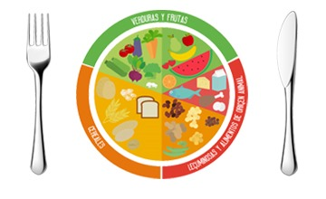

|
||||
|  | ||||
El plato del bien comer es una guía de alimentación que forma parte de la Norma Oficial Mexicana (NOM), para la promoción y educación para la salud en materia alimentaria, la cual establece criterios para la orientación nutritiva en México; ilustra cada uno de los grupos de alimentos con el fin de mostrar a la población la variedad que existe de cada grupo resaltando que ningún alimento es más importante que otro, sino que debe haber una combinación para que nuestra dieta diaria sea correcta y balanceada.
Divide a los alimentos en tres grupos:
Frutas y verduras.
Cereales y tubérculos.
Leguminosas y alimentos de origen animal.
Disfrutar de los alimentos y comer sanamente es darle calidad a la vida; no existen alimentos buenos ni malos, el secreto está en la combinación y la porción que se consume.
De acuerdo con la NOM, las recomendaciones para seguir adecuadamente El Plato del Bien Comer son: comer en gran medida frutas y verduras preferentemente con cáscara; incluir cereales integrales en cada comida; comer alimentos de origen animal con moderación; evitar lo más posible los azúcares, grasas, aceites, edulcorantes y sal; realizar tres comidas y dos colaciones al día; y hacer ejercicio al menos 30 minutos diarios. El Servicio de Información Agroalimentaria y Pesquera (SIAP) te invita a seleccionar, consumir y combinar los diferentes grupos del plato del bien comer, proporcionándote una alimentación completa, equilibrada y variada. Para información estadística te invitamos a que consultes el Anuario Estadístico de la Producción Agrícola, el Avance de Siembras y Cosechas, Avance de la producción pecuaria por producto, Anuario Estadístico de la Producción Ganadera y el Sistema de Información Agroalimentaria de Consulta (SIACON). |
||||
 meli0506mm@gmail.com.mx. Página web: http://www.educacion.mx Domicilio conocido S/N. Prohibido su reproducción total o parcial. Para un óptimo funcionamiento utilizar navegador Google Chrome y resolución de 1024. | ||||